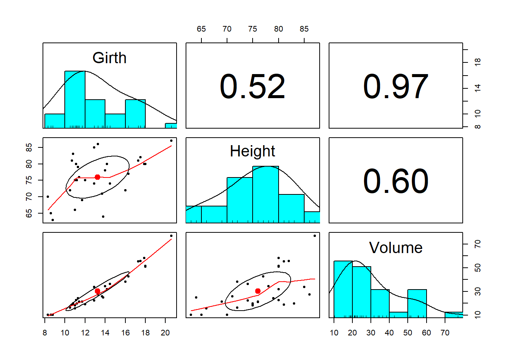
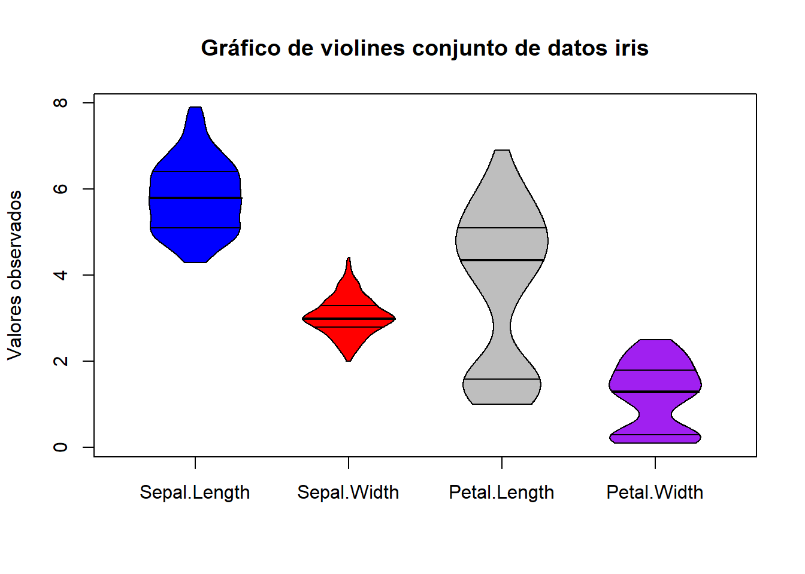

4.4 Trabajo 4
Cree en Rstudio un proyecto llamado Trabajo3 y almacene en un script/programa llamado trabajo-4 el desarrollo de este trabajo.
El programa que se presenta a continuación, como puede ser verificado, compila sin errores en R. No obstante, este presenta importantes problemas de estilo -buenas prácticas- en su codificación mala ortografía. Teniendo en cuenta la guía de buenas prácticas para la codificación en R, que se presentó en una de las sesiones de trabajo y que se encuentra disponible dando click en el siguiente link, realice las siguientes actividades:
- Construya/presente una lista con los errores de codificación/estilo que se están cometiendo en el programa adjunto.
- Construya y presente una nueva propuesta para el programa de tal manera que esta cumpla con las buenas prácticas de estilo en su codificación buena ortografía.
Nota. Los resultados que arroja el programa no deben cambiar con la nueva propuesta de codificación
# Una linea de código bien escrita----------
Var.1=c(1,4,6,8,10)
VarDos <- c(1 : 5)
F = TRUE
c<-2
RESULTADO1<-Var.1/VarDos+F+c
RESULTADO1- Se desea realizar un análisis descriptivo de las variables que conforman el marco de datos
data.framellamadotreesy que se encuentra disponible en la base de R. Este marco de datos, como puede ser verificado haciendo uso de la funcionesclass(trees),nrow(trees),names(trees),head(trees), entre otras, cuenta con información de 31 arboles para los cuales se dispone de tres variables: volumen (Volume), altura (Height) y longitud de su circunferencia (Girth).
El análisis descriptivo que se desea realizar a este conjunto de datos se potencia a través del uso del paquete psych. Teniendo en cuenta esta información, realizar las siguientes actividades.
Descargar desde el repositorio oficial de CRAN el paquete psych.
Haciendo uso de las funciones
.libPaths(),browseVignettes(),packageDescription()ylsf.str()explorar la ruta de nuestros computadores en la que fue instalado este paquete, los manuales disponibles para este paquete, la descripción general de las principales características de este paquete así como el listado de las funciones que este posee, respectivamente.Una vez que el paquete psych fue descargado, verificar que este se encuentra disponible en la pestaña Packages de Rstudio y cargar este al ambiente de trabajo (Environment) a través de la función
library().Para realizar el análisis descriptivo requerido al
data.frametrees, el paquete psych, dispone de la funciónpairs.panels. Hacer uso de esta función de tal manera que se obtenga el siguiente resultado el cual presenta una panorámica rápida del comportamiento de las variables que hacen parte de este set de datos.

- Acudiendo a las funciones que nos ofrece el paquete psych y tomando como referente el conjunto de datos
iris, explorar la funciónviolinBy(), revisar sus argumentos y hacer uso de esta de tal manera que se obtenga el siguinte resultado (gráfico). ¿Qué conclusiones puedo extraer sobre las variables del conjunto de datosirisa partir del comportamiento observado en esta figura?
Nota. El gráfico construido por cada uno de ustedes debe ser exacto al que se presenta a continuación

- Se desea construir una tabla web con los registros/individuos que conforman el
data.framemtcars. Esta tabla es posible de construir acudiendo a la funcióndatatable(mtcars)la cual hace parte del paquete DT. Teniendo en cuenta esta información, desarrollar las siguientes actividades:
Instalar, desde GitHub, el paquete DT. Este se encuentra disponible dentro del usuario llamado
rstudio/DT.Una vez instalado y cargado el paquete DT dentro del Environment de Rstudio haciendo uso de la función
library(), hacer uso de la funcióndatatable()disponible en este paquete de tal manera que se genere la tabla web requerida. Esta tabla deberá tener la siguiente apariencia.
- Adicionar los argumentos requeridos a la función
datatable()de tal manera que se elimine la columna con los nombres de los carros y la nueva tabla tenga la siguiente estructura.
Nota. Para ajustar los argumentos de esta función, revisar el manual del paquete DT disponible en la siguiente URL https://rstudio.github.io/DT/
- Se cuenta con la información disponible del conjunto de datos
mtcarsen dos rutas en la web. Estos conjuntos de datos están conformados por archivos de tipo CSV (Comma Separated Values) y se encuentran ubicados en las siguientes direcciones.
Teniendo en cuenta los anteriores dos archivos, realizar las siguientes actividades.
Explorar el contenido de cada uno de los dos archivos de datos tipo CSV disponibles en las rutas mencionadas. ¿En qué se diferencia el contenido de estos dos tipos de archivos?
Haciendo uso de las funciones
read.table(),read.csv()oread.csv2(), importar a R los archivos en cuestion. El archivo 1 debe ser guardado dentro de un objeto llamado mtcars_1 y el archivo 2 dentro de un objeto llamado mtcars_2.
- Se cuenta con la información de 505 estudiantes graduados de una universidad colombiana. Esta información se encuentra almacenada en un archivo de Excel el cual puede ser descargado dando click en el siguiente enlace.
Teniendo en cuenta lo anterio, realizar las siguientes actividades.
Descargar y guardar en algún lugar/carpera de su computador o del proyecto empleado en el desarrollo de este trabajo, la base de datos de Excel que contiene la información de los estudiantes graduados.
Importar a R la base de datos de los estudiantes graduados. Almacenar los resultados del proceso de importación en un objeto llamado graduados.
Con las funciones aprendidas en este curso y disponibles en la sección Funciones útiles para la gestión de data.frame de este documento, explorar el contenido del
data.frame(base de datos) graduados.Con lo aprendido hasta ahora, seleccionar los estudiantes graduados nacidos en el departamento de Antioquia (DEP_NAC) y que son mujeres (SEXO). Guardar los resultados de esta selección en un objeto llamado graduados_ant. ¿Cuántos graduados cumplen las condiciones definidas?
Exportar en un archivo CSV, al lugar/carperta que se desee dentro de nuestros computadores, el contenido del objeto graduados_ant.